自初稿逐像素描线重制：撕纸缺口逐点保留、字碗/横槽保持镂空、折角结构原样。背景为真透明（原 PNG 是不透明白底 + 局部镂空）。

generated-images/gosume-logo.svg（彩色，透明底）· generated-images/gosume-logo-mono.svg（单色，fill="currentColor"，颜色随宿主 CSS）。0 0 1024 1024；奶油 #F1EBDB · 蓝 #0E7DFB（取自初稿实测值）；纸形外轮廓 655 点 + 折角 33 点，均从初稿位图逐像素描线（RDP 简化），撕纸缺口为原稿真实轮廓。color: var(--text-primary) 即可换色）。